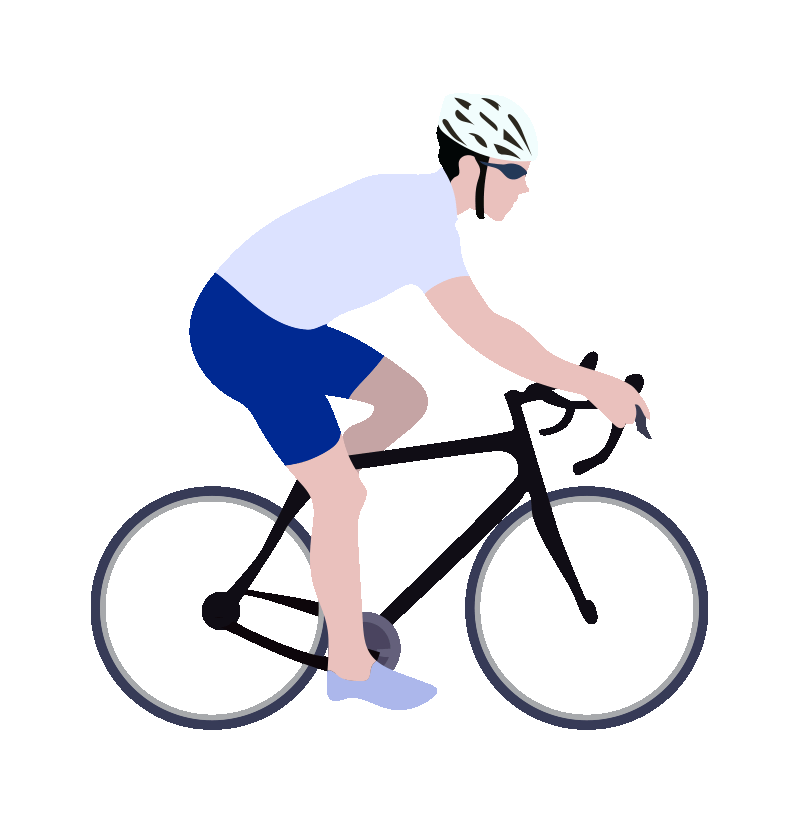
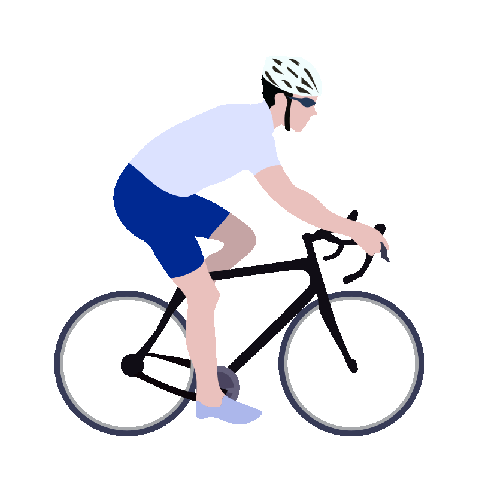

EAT
ADVENTURE
I am just a simple human who enjoys his life and I will live my life to the fullest. I like breathtaking views especially in highland areas but ironically, I am also afraid of heights. While I travel, I also look for delivious eateries to recommend for my friends. I actually eat a LOT but I never get fat. People always ask me and they are wondering how am I not getting fat despite of eating a lot.
Have a look at these few destinations that I have visited. Some might be already familiar to you because these are quite popular destinations!

Some of the pictures are not clickable because I only have limited or only one picture of them. Only twinlakes will be clickable because I have plenty of images of it because it is only 5.7km away from us.
EAT
ADVENTURE
© Eat Adventure Association | All rights reserved.
Terms and Conditions | Privacy Policy.